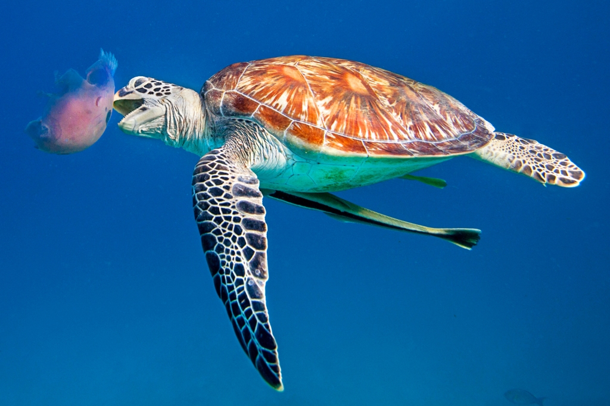
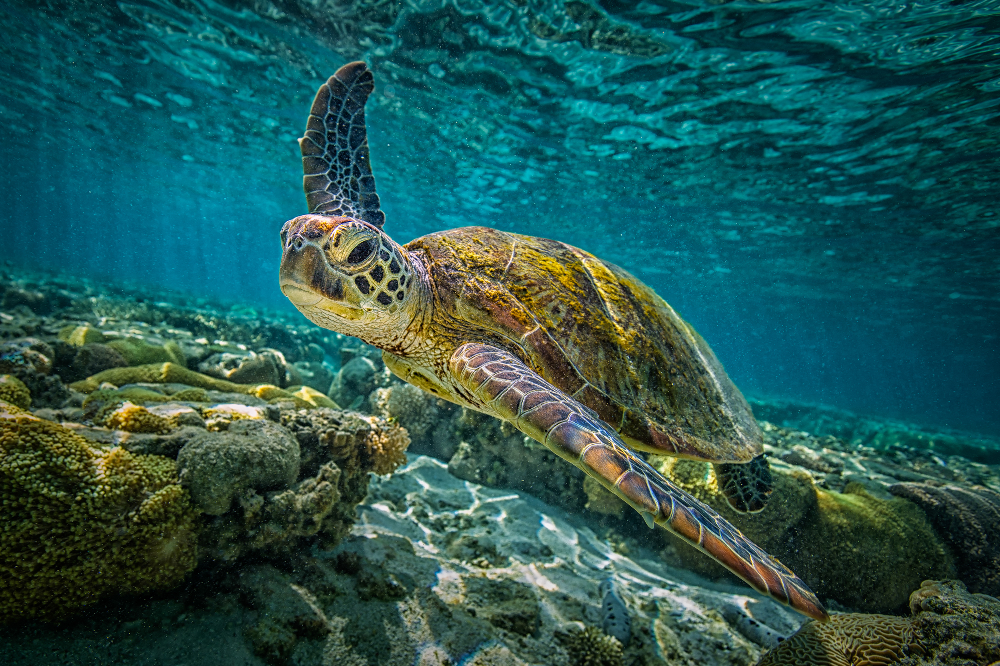

© Living ocean foundation

© Magic Murals

© AI ANGEL GENTEL—GETTY IMAGES
© Living ocean foundation
© Magic Murals
© AI ANGEL GENTEL—GETTY IMAGES
Sri Lanka is home to five out of the seven species of sea turtles in the world. They are the Green turtle, Olive Ridley turtle, Loggerhead turtle, Hawksbill turtle, and Leatherback turtle. These species are all either endangered or vulnerable due to human activities such as overfishing, pollution, and habitat destruction. Therefore, it is crucial to protect these species to maintain a healthy marine ecosystem.

© slavadubrovin
The Olive ridley sea turtle also known commonly as the Pacific ridley sea turtle, is a species of turtle in the family Cheloniidae. The species is the second-smallest and most abundant of all the sea turtles found in the world.

© ecomagazine
The leatherback sea turtle, sometimes called the lute turtle or the leathery turtle, is the largest of all living turtles. Also the heaviest non-Crocodilian reptile, reaching lengths of up to 1.8 meters and weights of 500kg.

© Getty Images/iStockphoto
The Loggerhead is a species of oceanic turtle distributed throughout the world. It's a marine reptile. The average loggerhead measures around 90cm in Carapace length when fully grown.

© USFWS (CC BY 2.0)
The hawksbill sea turtle is a critically endangered sea turtle belonging to the genus Eretmochelys. The species has a global distribution that is largely limited to tropical and subtropical marine and estuary ecosystems.

© GregSullavan
The Green sea turtle, also known as the green turtle, black turtle, or pacific green turtle, is a species of large sea turtle of the family Cheloniidae. It is the only species in the genus Chelonia.
| Turtle Name | Conservation Status | Scientific Name | Family |
|---|---|---|---|
| Olive Ridley Sea Turtle | Vulnerable | Lepidochelys olivacea | Cheloniidae |
| Leatherback Sea Turtle | Vulnerable | Dermochelys coriacea | Dermochelyidae |
| Loggerhead Sea Turtle | Endangered | Caretta rafinesque | Cheloniidae |
| Hawksbill Sea Turtle | Critically endangered | Eretmochelys imbricata | Cheloniidae |
| Green Sea Turtle | Endangered | Chelonia mydas | Cheloniidae |